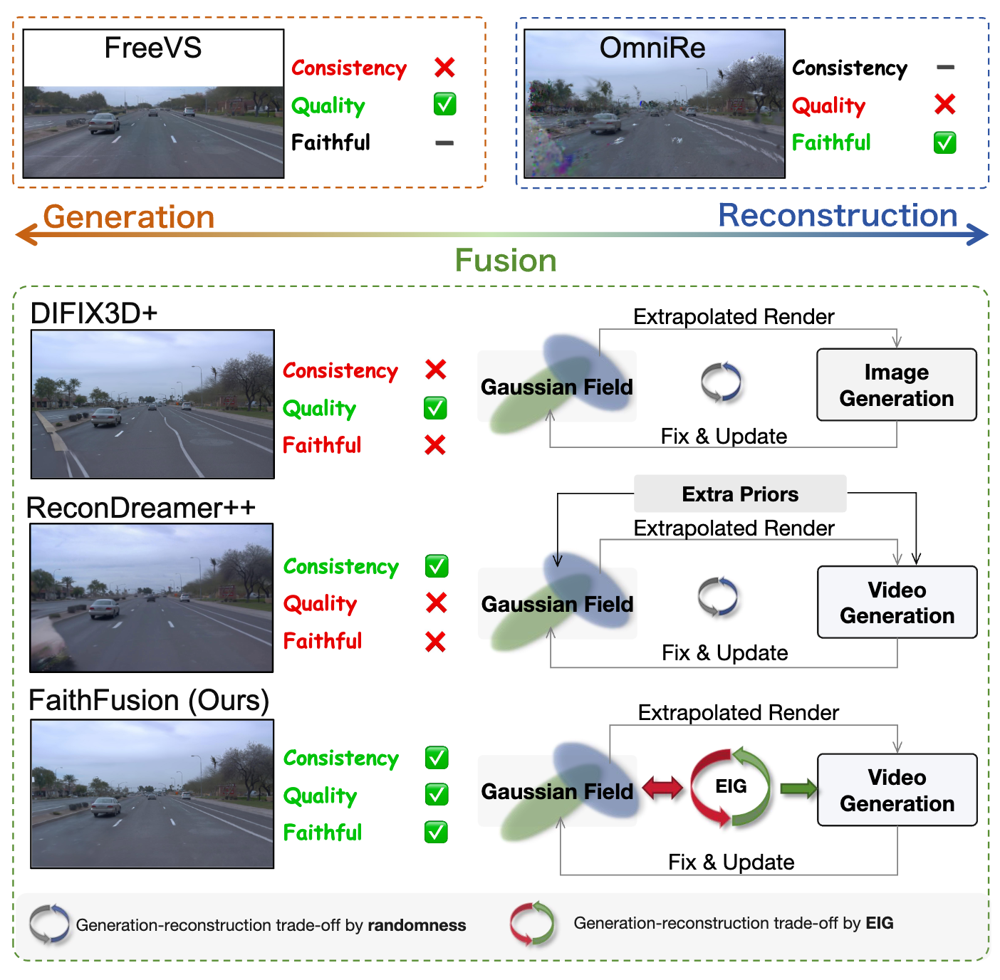

Abstract
In controllable driving-scene reconstruction and 3D scene generation, maintaining geometric fidelity while synthesizing visually plausible appearance under large viewpoint shifts is crucial. However, effective fusion of geometry-based 3DGS and appearance-driven diffusion models faces inherent challenges, as the absence of pixel-wise, 3D-consistent editing criteria often leads to over-restoration and geometric drift. To address these issues, we introduce FaithFusion, a 3DGS-diffusion fusion framework driven by pixel-wise Expected Information Gain (EIG). EIG acts as a unified policy for coherent spatio-temporal synthesis: it guides diffusion as a spatial prior to refine high-uncertainty regions, while its pixel-level weighting distills the edits back into 3DGS. The resulting plug-and-play system is free from extra prior conditions and structural modifications. Extensive experiments on the Waymo dataset demonstrate that our approach attains SOTA performance across NTA-IoU, NTL-IoU, and FID, maintaining an FID of 107.47 even at 6 meters lane shift.

FaithFusion addresses the blurred boundary problem in the fusion of generation and reconstruction. The figure above demonstrates the paradigm differences between our method and different approaches.
Pipeline

The EIG-guided progressive training loop with three steps: Step 1: Novel-view synthesis. Render laterally offset novel views and their pixel-level EIG maps from the original 3DGS. Step 2: EIGent Fixed. Feed the renders and EIG maps into EIGent to repair high-EIG regions—using Video DiT early for spatio-temporal consistency and DIFIX3D+ later for per-frame perceptual refinement. Step 3: EIG-guided 3DGS Update. Fine-tune the 3DGS model with the EIGent-restored views and EIG maps.
EIGent Architecture